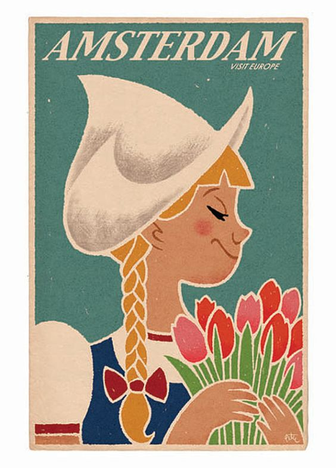

Фестивали Нидерландов
Карнавал в Нидерландах (26 февраля)
На католическом юге страны, в нидерландских провинциях Брамант и Лимбург, зимой проводится традиционный карнавал. Проходит он между днем святой Епифании (6 января) и «жирным вторником» — Марди-гра, аналогом русской масленицы. Начинается карнавал, как правило, в феврале или начале марта, за 40 дней до Пасхи, обычно в воскресенье. Дни карнавала предшествуют Великому посту. Традиция карнавала очень старая, и связана она с простой идеей: перед Великим постом надо всласть наесться, напиться и нагуляться. Видимо, долгий пост легче перенести, если начинается он с положительных эмоций. Карнавал — это пора беззаботного и безудержного веселья, пора шумных парадов наряженных в карнавальные костюмы горожан, гигантских кукол, причудливых сооружений на колесах, веселящихся на улицах и в кафе и ресторанах людей, необычных призывов и песен на местных диалектах.
Национальный день мельника (13 мая)
В Национальный день мельника в Нидерландах около 600 из существующих в стране 1000 ветряных мельниц открываются для посещения публикой. Этот праздник совпадает с Днем велосипедиста, поэтому во все велосипедные маршруты включаются посещения ветряных мельниц. Ветряные мельницы — один из символов Нидерландов, наряду с каналами, тюльпанами, голландским сыром и голландской селедкой.
Фестиваль рок-музыки «Пинк-поп»
Фестиваль Пинк-поп (Pinkpop Festival) или, кратко, Pinkpop — ежегодный фестиваль рок-музыки, проводимый в Ланграафе (Landgraaf), городе, расположенном на юго-востоке Нидерландов. Изначально фестиваль проводился в выходные на Пятидесятницу, но начиная с 2013 года временем его проведения стал июнь. Интересно, что первый фестиваль прошел в 1970 году в Гелеене (Geleen) и стартовал в понедельник, следующий за Пятидесятницей. Название Pinkpop — наполовину голландское, наполовину английское – имеет две возможные интерпретации. Первоначально, часть слова pink — сокращение от голладского названия Пятидесятницы (Pinksteren), а pop — часть слова pop music (popular music — популярная музыка). Но впоследствии название Pinkpop стали интерпретировать как сочетание английского слова pink (розовый) и голландского слова pop (кукла), которое стало основой логотипа фестиваля — куклы в розовом платье. Итак, в настоящее время Pinkpop проводится в течение трех дней, с пятницы по воскресенье, разворачивая представления на 3 различных площадках и принимая более 60 тысяч человек в день. А за 40-летнюю историю фестиваль посетили более двух миллионов человек, представили свое творчество более 500 исполнителей и групп.
Международный фестиваль конопли «Чаша каннабиса» (19 ноября)
Международный фестиваль конопли «Чаша каннабиса» (Cannabis Cup Awards) проводится в течении нескольких дней в конце ноября в Амстердаме. Инициатором праздника выступил американский журнал High Times, который теперь ежегодно организует фестиваль осеннего сбора марихуаны. Его усилиями в Амстердаме было реализовано то, что абсолютно нереально в «свободной» Америке. На фестивале проходит смотр последних достижений в области разведения марихуаны. Международное жюри определяет лучший продукт путем бесконечных дегустаций. Призы распределяются по пяти номинациям: лучший кофе-шоп, лучший гашиш, лучший продукт переработки конопли (к примеру, конопляное пиво), лучший куст, выращенный в теплице, и лучший сорт марихуаны.
